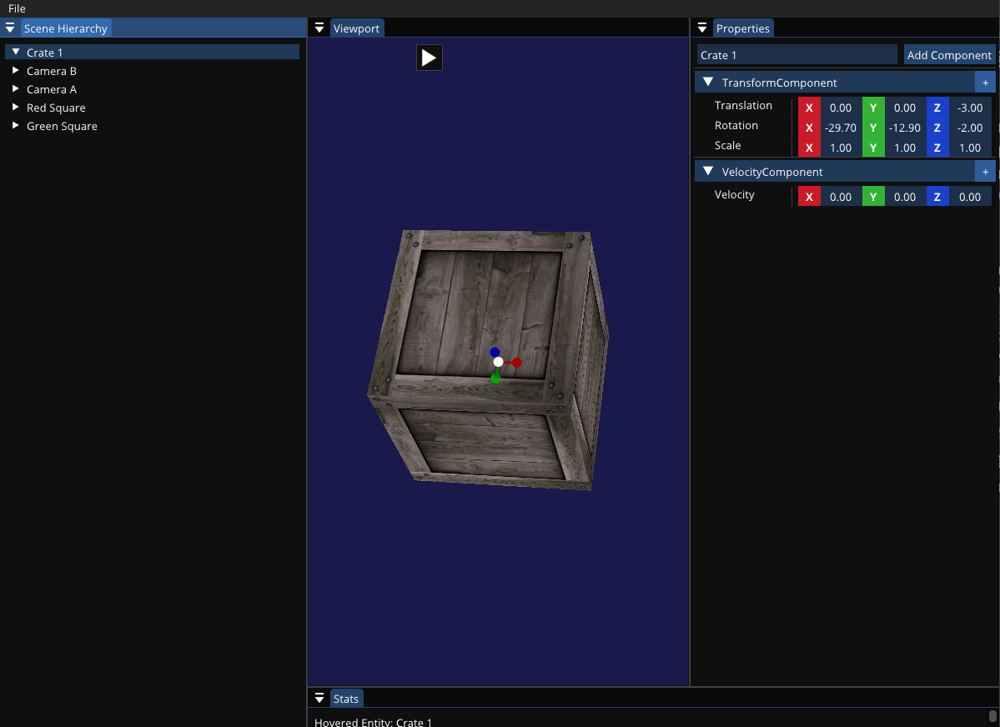

Mystic Engine
A custom game engine and editor exploring how strong tooling can make iteration faster.
View source on GitHub
An engine for experimenting
Mystic is my playground for engine architecture and developer tools. It combines an entity-component architecture with an editor that lets creators inspect scenes and modify built-in and custom components.
The project focuses on the connection between runtime systems and the tools used to author them: how data is represented, how custom types become editable, and how quickly game code can change.
Hot-reloadable game code
I wanted game code to run inside the editor and remain editable without restarting the whole engine. Mystic loads that code from a separate GameCode DLL.
The editor’s hot-reload action rebuilds the module and reinjects it into the running engine. This makes the edit-and-test loop part of the editor workflow.
Reflection that connects code to tools
The editor needs information about custom component types that live inside the reloadable module. I built the Mystic Header Tool to parse scripts, create a type dictionary, and generate the code needed to expose those types.
That information supports both scene serialization and editing custom component properties in the UI.
A component-driven editor
The ImGui interface pairs a scene view with an entity and component editor. Creators can add and modify components, then save the scene’s serialized entity data as part of a Mystic project.
